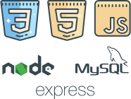

Curiosidades sobre os cachorros
O AdoCão é um site que permite pessoas ajudarem cachorros adotando e cuidando com muito amor e carinho. Esse site foi desenvolvido pelo Rickelme Dias, que ama animais, ainda mais cachorros, esse estudo envolve front-end, back-end a sql.
O que foi utilizado no desenvolvimento do AdoCão ?
O AdoCão é um site que permite pessoas ajudarem cachorros adotando e cuidando com muito amor e carinho. Esse site foi desenvolvido pelo Rickelme Dias, que ama animais, ainda mais cachorros, esse estudo envolve front-end, back-end a sql.
O que foi utilizado no desenvolvimento do AdoCão ?
Para o layout e visual do site foram utilizadas diversas ferramentas de designer para criação de vetores, ui e ux. Para mais informações segue o contato abaixo.
Quem sou?

Prazer a todos, sou Rickelme Dias, desenvolvedor, iniciei minha experiência no mundo da programação com a linguagem C, onde eu desenvolvi um robô para uma empresa no estágio. Desde jovem eu sempre adorei jogos, animais e desenvolvimento, não necessariamente nessa ordem, meu contato com a programação se iniciou em desenvolvimento de jogos bem jovem e foi crescendo com o tempo.
Hoje sou desenvolver web, mas também um apreciador e interessado em assuntos de tecnológico, como o mundo de Embarcados. Esse site, tanto sua parte visual (UI/UX, Html, CSS) quanto sua parte engenhosa/funcional (JS, Node.js, Express, MySQL) foram desenvolvidos com muito carinho e atenção aos detalhes, pois eu sempre gosto de dar meu melhor no que faço, principalmente quando é algo que eu gosto.